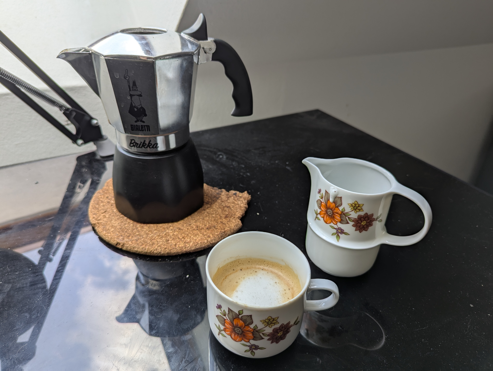

Home
Cappuccino

Description
This is my way of making cappuccino, it puts a great cappuccino on the table in about five to ten minutes! I have a 4 cup brikka pot, so be sure to use the correct measurements for your model.
The amount of coffee will change slightly depending on the roast profile. I recommend using medium roasted beans with chocolatey undertones because they work great with the moka pot, giving a full-bodied texture with great flavour!
Ingredients
- Coffee Beans
- 180g of water
- Milk
Steps
- If you have an electric stove, start heating the stovetop. A moka/brikka pot isn't inherently compatible with induction stovetops, but you can still use an adapter
- Fill 180g of water in the bottom chamber. SAFETY NOTE: 180g of water works for my model, but may be too much for yours. Ensure there is NO water covering the valve
- Fill the funnel filter to the top with coffee beans or grounds, then put those in your grinder. If you are using grounds, skip the next step
- Grind the beans and put them back in the funnel filter
- Tap the funnel filter lightly (do not tamp!) and slot it back in the bottom chamber. Screw in the top chamber and put the moka pot on the stove
- With a brikka, as soon as coffee starts coming out, remove it from the stove. When it starts sputtering, run the pot under cold water to avoid cooking the coffee. Serve into 4 cups
- Froth your milk. With a hand frother, warm a cup of milk in the microwave to about 68°C, then froth it for about 4-5 seconds. In my kitchen, I usually need 2 cups of milk
- Tap the pitcher on the table to remove excess foam, then pour into the cups. Start pouring high, then quickly come down close to the cup for best results. Enjoy!